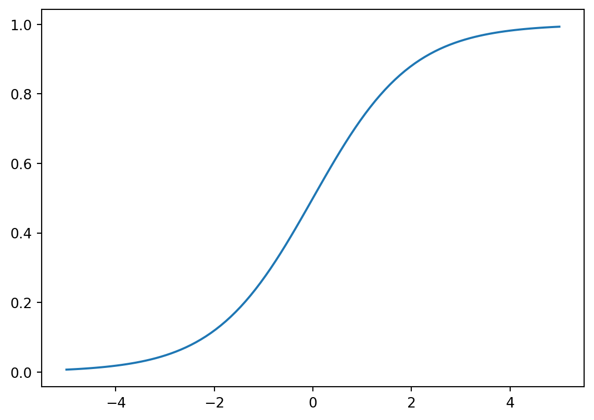
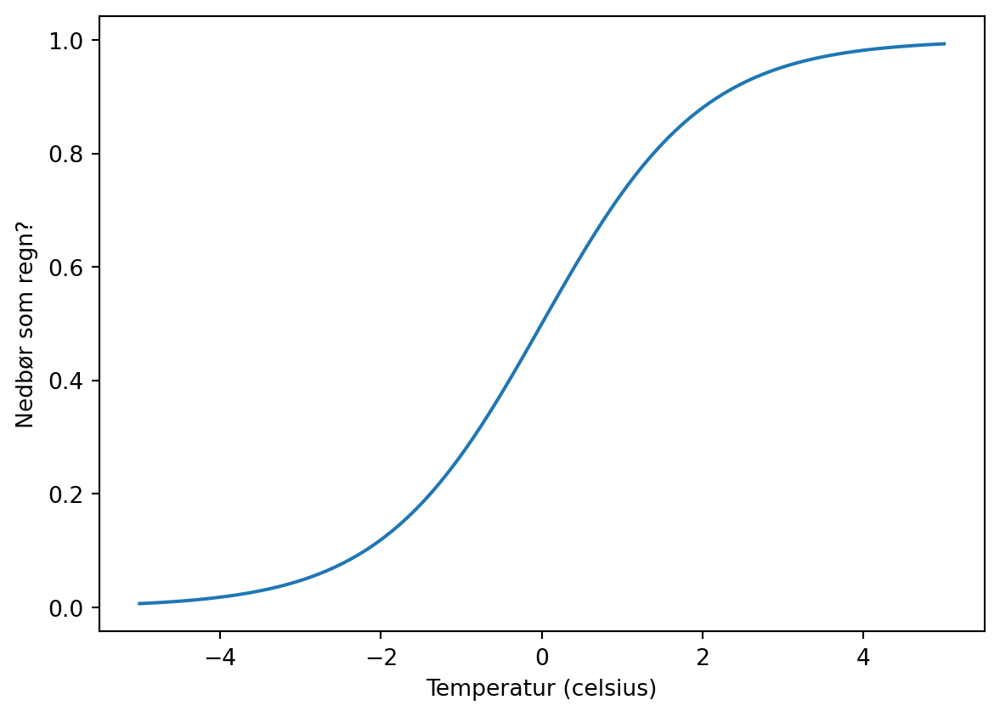
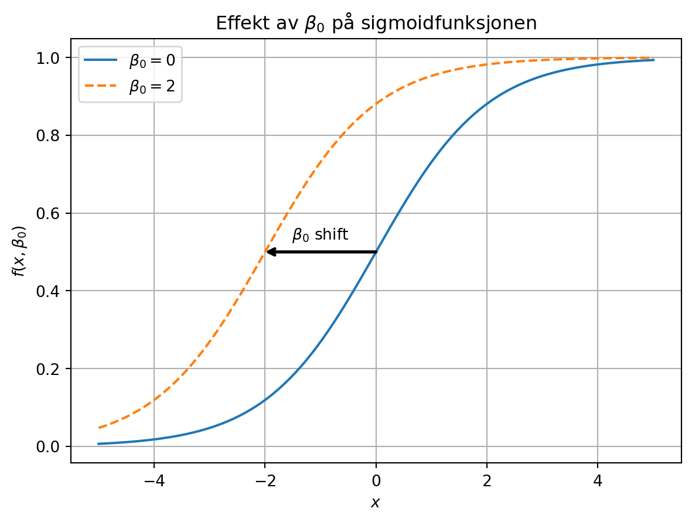

import numpy as np
def f(z):
return np.exp(z)/(1 + np.exp(z))
z = np.linspace(-5, 5, 100)
import matplotlib.pyplot as plt
plt.plot(z, f(z))
\[y = f(x) + \varepsilon\]
Der \(f(x)\) er det vi greier å forklare med modellen vår, og \(\varepsilon\) er det vi ikke klarer å forklare.
Vi gjør prediksjoner med
\[ \hat y = f(x) \]
Og kaller da \(\hat y\) for “estimert y”
Vi så på
\[ f(x) = ax + b \]
Og anvendte dette på fiktive målinger for Ohms lov:
\[ I(U) = \frac{1}{R} U\]
som er \(ax + b\), men med \(a=\frac{1}{R}\), \(b=0\) og den generelle forklaringsvariablen som generelt heter \(x\) heter heller \(U\) når den beskriver strøm.
\[ f(z) = \frac{e^z}{1+e^z} \]
Hvordan ser denne funksjonen ut?
import numpy as np
def f(z):
return np.exp(z)/(1 + np.exp(z))
z = np.linspace(-5, 5, 100)
import matplotlib.pyplot as plt
plt.plot(z, f(z))
import numpy as np
def f(z):
return np.exp(z)/(1 + np.exp(z))
z = np.linspace(-5, 5, 100)
import matplotlib.pyplot as plt
plt.plot(z, f(z))
plt.xlabel("Temperatur (celsius)")
_= plt.ylabel("Nedbør som regn?")
Det snør gjerne også litt over null grader.
Sette \(z = \beta_0 + \beta_1 x\).
Da kan vi heller lage oss \(p(x) = \frac{e^{\beta_0 + \beta_1 x}}{1 + e^{\beta_0 + \beta_1 x}}\)

Vi gjør en egen tutorial som handler om dette datasettet, for å få litt praktisk omgang med logistisk regresjon!